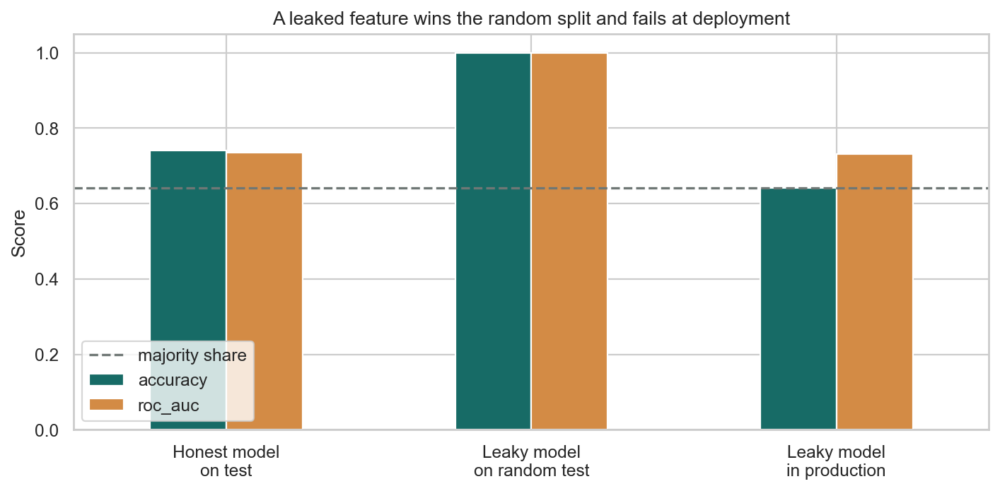

ML Hands-on Lab · Foundations
The ML workflow
1. The one-sentence version
You separate learning, choosing, and final checking so that your performance estimate describes new cases rather than your memory of old ones.
2. The intuition
Imagine preparing for an exam. Training questions teach you. Validation questions tell you which study method is working. The sealed test tells you how well that finished method transfers. If you keep opening the sealed test and changing your method, it is no longer a test.
A five-row example
You have outcomes [0, 1, 0, 1, 1]. Use rows 1–3 to train, row 4 to choose between two models, and row 5 once at the end. Model A gets row 4 right; you select it. Model A also gets row 5 right, so final accuracy is 1/1. That estimate is noisy, but honest. If you tried ten models until one got row 5 right, 1/1 would describe your search, not future performance.
Now add a field recorded after the outcome: [0.01, 1.00, 0.02, 0.99, 1.01]. Thresholding it at 0.5 gets 5/5. The arithmetic is real; the prediction claim is not.
3. The maths in plain English
\[\hat R_{test}(f)=\frac{1}{n_{test}}\sum_{i=1}^{n_{test}} L(y_i,f(x_i))\]
\(f\) is the frozen model. \(x_i\) is a test input. \(y_i\) is its answer. \(L\) assigns a cost, such as 1 for a wrong class and 0 for a correct one. Averaging gives estimated future risk. More independent test rows reduce uncertainty; repeatedly adapting \(f\) to this average makes it optimistically biased.
\[\text{accuracy}=\frac{TP+TN}{TP+TN+FP+FN}\]
Each symbol is a count: true positives and true negatives are correct; false positives and false negatives are mistakes. Accuracy gets larger when either kind of correct decision grows, but it says nothing about whether your features will exist in production.
4. What the model is actually doing during training
- Freeze a test set before fitting transformations or models.
- Fit preprocessing and model parameters using training rows only.
- Use validation results to choose features, capacity, thresholds, or other settings.
- Freeze that entire procedure.
- Evaluate once on test. Report the split rule alongside the score.
- Before deployment, audit when every input is created. A clean random split cannot repair a future-only feature.
5. The knobs
| Knob | Too low | Too high |
|---|---|---|
| Test fraction | The final estimate jumps around. | Too little data remains for learning. |
| Validation reuse | You may make poorly informed choices. | You overfit choices to validation. |
| Stratification | Rare classes may vanish from a split. | Not really a degree knob; use it when class balance matters. |
| Grouping or time gap | Related or future information crosses the boundary. | The estimate may be conservative and training data shrinks. |
6. Assumptions and failure modes
Your test rows must resemble the cases you care about and be independent enough to count as new evidence. Random splitting fails when the same person, device, household, or future time period appears on both sides. Target leakage fails more quietly: a field can be present in every historical row yet unavailable at decision time. Repeated test peeking creates selection bias even without a leaked column.

7. Code
Minimal version
from sklearn.model_selection import train_test_split
X_dev, X_test, y_dev, y_test = train_test_split(
X, y, test_size=0.2, random_state=0, stratify=y
)
X_train, X_val, y_train, y_val = train_test_split(
X_dev, y_dev, test_size=0.25, random_state=0, stratify=y_dev
)
model.fit(X_train, y_train)
print(model.score(X_val, y_val))Realistic version
from sklearn.pipeline import Pipeline
from sklearn.preprocessing import StandardScaler
from sklearn.linear_model import LogisticRegression
pipe = Pipeline([
("scale", StandardScaler()),
("model", LogisticRegression(max_iter=1000, random_state=0)),
])
pipe.fit(X_train, y_train)
# Make choices on validation; open test only after the procedure is frozen.
validation_score = pipe.score(X_val, y_val)
test_score = pipe.score(X_test, y_test)8. Where it's actually used
- Credit underwriting, where application-time fields must be separated from later repayment records.
- Hospital readmission models, where notes written after discharge cannot predict discharge-time risk.
- Fraud systems, where time-based testing prevents future chargebacks from leaking backward.
- Recommendation systems, where one user's later clicks must not enter an earlier training window.
- Manufacturing inspection, where batches or machines need grouped splits to avoid near-duplicate leakage.
9. How it relates to its neighbours
Cross-validation repeats the training/validation idea to use limited development data efficiently; it does not eliminate the need for a final untouched test. Time-series backtesting and group cross-validation specialize the boundary for dependent rows. Leakage is often confused with overfitting: overfitting learns noise in legitimate training inputs, while leakage learns information that should not be available at all.